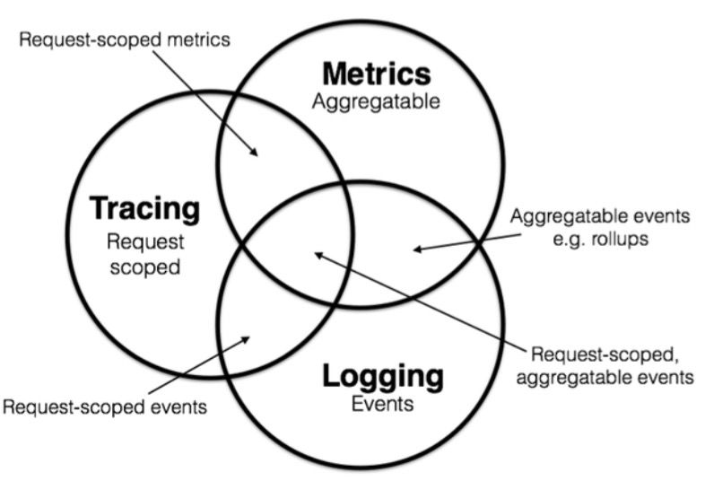

可观测性问题
可观测性
现代的可观测性（Observability）等于以下三者的集合。

- 可观测性概念起源于控制理论中的可观察性（observability）
- 系统的可观测性，指该系统可以由其外部输出推断其内部状态的程度
- 某一个系统的可观测性越强，那么我们对这个系统的把控能力也会越强
需要明确，监控是一个动作。
- 目前认为，一个完整的可观测性系统，具备输出三种类型数据的能力：metrics、log、trace。
- 实际上，metrics、log、trace只是三种数据类型，本身与可观测性无关。仅仅是收集这些类型的数据，并不能保证系统的可观测性。
- 但是将这些数据进行合理的收集、存储、分析和利用，就容易使系统具有一定的可观测性。因此这些数据，又被称为可观测数据。
定义：
- metrics指标：是原子性的、可累加的一种值，用于表示在⼀段时间内测量的数值，每个metrics都是一个逻辑计量单元。
- trace链路追踪：又称分布式链路追踪，表示 请求通过分布式系统 的端到端的路径。
- log日志：用于描述一些离散的（不连续的）事件，是对特定时间发⽣的事件的⽂本记录。
特性：
- metrics 倾向于更节省资源，因为他会“天然的”压缩数据。
- logging 倾向于无限增加的，会频繁的超出预期的容量。（可以通过 告警和定期清理 进行预防）
- Tracing 数据则介于两者之间
Metric
Counter
- Counter，适用于样本数据单调递增的指标，即只增不减，除非监控系统发生了重置
- 用途：服务的请求数、已完成的任务数、错误发生的次数等
Gauge
- Gauge，适用于样本数据可以任意变化的指标，即可增可减
- 用途：比如 CPU温度、内存使用率、当前并发请求的数量等
Timer
- Timer，适用于需要对某个事件的处理时间进行统计时使用
- 用途：比如 关键业务的处理时间、数据库调用耗时等
Timer一般会同时记录Counter，在有些组件中，Timer == Histogram
Histogram
- Histogram，适用于需要对样本数据进行一定的统计工作时使用
- Histogram 在一段时间范围内对数据进行采样（通常是请求持续时间或响应大小等）
- 并将其计入可配置的存储桶（bucket）中，后续可通过指定区间筛选样本
- 也可以统计样本总数，最后一般将数据展示为直方图
Histogram解决长尾问题
- Histogram 和 Summary 都是为了解决长尾问题而提出的
- 很多情况下，我们倾向于使用平均值去描述一些统计数据，例如CPU的平均使用率、页面的平均响应时间
- 然而平均值有个致命缺点，难以察觉其中的极端数据，而且会因极端数据导致平均值的准确性降低。
- 比如：如果大多数API请求都维持在100ms的响应时间范围内，而个别请求的响应时间需要5s，此时使用平均值就会出问题。这就是长尾问题。
- 但是如果使用分位值，计算出95%数据的最大值，发现耗时都在100ms以内，说明5s数据仅仅是个别现场。
Summary
- 与 Histogram 类型类似，Summary 也是用于表示一段时间内的数据采样结果（通常是请求持续时间或响应大小等）。
- 但与 Histogram不同的是：Summary 直接存储了分位数，不需要再通过区间来计算。
- Histogram和Summary的异同。
- 相同：都有_sum和count
- 不同：都提供了分位数的计算，但是方式不同
- Histogram 是通过记录很多个bucket的值，供服务端 通过区间去计算分位数，每个桶内默认为线性分布，存在一定计算误差。
- Summary 是在客户端直接得到了分位数，服务端无需计算，分位数是直接根据数据排序得到的，是准确的。
分布式链路追踪
Dapper
OpenTracing
这个规范已经不再维护了。

OpenTelemetry
OpenTelemetry 的终极目标是把人们之前手工做的，通过架构设计搭建不同的技术组件来观测系统状态的方案统合成一个大一统的方案，是实践领先于理论，理论又统一实践的一个好例子。
OpenTelemetry的自身定位很明确：数据采集和标准规范的统一，对于数据如何去使用、存储、展示、告警，官方是不涉及的，我们目前推荐使用Prometheus + Grafana做Metrics存储、展示，使用Jaeger做分布式跟踪的存储和展示。
APM的两种监控子类：分布式跟踪和Metrics，其实还有第三种，就是Logging日志，目前常见的日志收集平台有EFK（把 ELK 里的 Logstash 换成了 filebeat）、Fluentd。
OpenTelemetry 有一个创新，MTL 三项数据被统一在 baggage 里面了。
参考：《OpenTelemetry-可观察性的新时代》
OpenTelemetry 主要解决云原生可观测性（监控，分布式追踪，日志）的标准制定和工具建设两大类问题。
问题拆解：
- 统一可观测性领域标准：协议（API），传输数据模型。
- 为不同技术提供统一的 SDK，统一用户接入体验。
- 降本增效，可观测性平台技术共享，功能组件复用，能力协同。
- 业务落地，推动可观测性领域先进技术能力落地业务。
统一数据模型和数据传输标准：
- 日志模块 log
- 追踪模块 tracing
- 监控模块 monitor/metrics
- 性能模块 APM performance
官方例子
2.x 时代
要用opentelemetry-instrumentation-bom，而不是opentelemetry-bom，这样配上一个agent配置文件，就可以实现自动配置加内置配置实例了。
agent 更新见：
1 | |
logback的配置：
1 | |
agent 的配置文件：
1 | |
1 | |
先启动一个 grpc 程序
1 | |
开启 instrumented 之旅
- 下载一个 javaagent。
- 修改环境变量如下：
1 | |
- 再启动 cs 调用，可以看到默认的 exporter 会在日志里默认输出 traceid、spanid 和一些方法默认的打点（也就是说会把 gRPC 的基础通信细节存放在 AttributesMap 里，类似于 Raptor 的一些 tagValue）：
[otel.javaagent 2022-05-17 11:31:26:773 +0800]
[grpc-default-executor-1] INFO
io.opentelemetry.exporter.logging.LoggingSpanExporter -
‘helloworld.Greeter/SayHello’ : 97a0114c7042cc1a9393cf1ca9c20d65
c8b19ae084c6df3a SERVER [tracer: io.opentelemetry.grpc-1.6:1.12.0]
AttributesMap{data={net.peer.port=53437, net.transport=ip_tcp,
rpc.method=SayHello, rpc.service=helloworld.Greeter, thread.id=19,
rpc.grpc.status_code=0, rpc.system=grpc, net.peer.ip=127.0.0.1,
thread.name=grpc-default-executor-1}, capacity=128,
totalAddedValues=9}
Automatic Instrumentation
按照设计，OpenTelemetry 的 agent 在启动中加入后就会自动地做拦截：java -javaagent:path/to/opentelemetry-javaagent.jar \ -jar myapp.jar。
命令行选项配置
这个 agent 的行为是可以通过选项（option）高度可配置的（highly configurable）：
1 | |
可以看到 zipkin 是被当做一个可选的 exporter 设置起来的，我们也可以配置我们的 service.name。
环境变量配置
当然，使用环境变量也是可以的：
1 | |
配置文件配置
也可以使用配置文件（这点就很像 ES 了）：
1 | |
自动化配置之外的选项
注解
引入依赖
1 | |
1 | |
1 | |
@WithSpan
这个注解对同步方法调用会自动拼接出<className>.<methodName>，而且能够适应future- or promise-like的请求（the span will not be ended until the future completes.）。
@SpanAttribute 会把方法参数自动加进 span 的 AttributeMap 里面：
1 | |
这个注解可以被 suprressed：OTEL_INSTRUMENTATION_OPENTELEMETRY_ANNOTATIONS_EXCLUDE_METHODS=my.package.MyClass1[method1,method2];my.package.MyClass2[method3]。
无侵入地通过 include 把方法拦截起来：OTEL_INSTRUMENTATION_METHODS_INCLUDE=my.package.MyClass1[method1,method2];my.package.MyClass2[method3]。
配置项
Agent Configuration里的配置是极易变动的，最好实时查询为好。环境变量等于大写字母加下划线（OTEL_TRACES_EXPORTER），而配置文件是按照 properties 格式（小写字母加.）来设计的（otel.traces.exporter）。
禁用打点
有一些打点默认是 disabled 的，这点和 raptor 也有点像。为什么不采用调整采样率或者压缩（比如压缩为简单的 count），或者限制 tagValue 的模式来解决这个问题？
特别重要的 Manual Instrumentation
如果有一个库（Libraries）想要使用 OpenTelemetry 来导出遥测数据，它必须只依赖opentelemetry-api包，绝不要依赖于 OpenTelemetry SDK。OpenTelemetry SDK 必须由应用**程序（Applications）**通过依赖于 OpenTelemetry SDK 来提供。这样，real implementation 只有 the user application is configured for it 才会被用到，这就提供了 api 和 implementation 的分离。
官方文档主要针对opentelemetry-sdk的实现的配置法，其他实现的配置可以采用不同的方法。
1 | |
一些值得一提的设计准则（Design Princinpals）
end-users 注入实例
OpenTelemetry 鼓励类库的设计者允许 end-users inject 一个 OpenTelemetry 的实例到 instrumentation code 里（这类似 yield 和 SPI），这种设计可以回退到从 GlobalOpenTelemetry 获取一个 instance。end-users 不能配置这个 instance，所以这是一个很脆弱（brittle）的选择。
不要使用 OpenTelemetry SDK 里的方法
最好使用 OpenTelemetry API 里的方法。
Instrumentation Library 提供 Instrumented Library 的 instrumentation。
Instrumented Library 是收集数据的地方，Instrumentation Library 是提供 instrumentation 的地方。这两者可以合二为一。